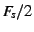

Next: Compiling Up: The Speex Codec Manual Previous: Introduction to Speex Contents Index
This section describes Speex and its features into more details.
Before introducing all the Speex features, here are some concepts in speech coding that help better understand the rest of the manual. Although some are general concepts in speech/audio processing, others are specific to Speex.
The sampling rate expressed in Hertz (Hz) is the number of samples taken from a signal per second. For a sampling rate of kHz, the highest frequency that can be represented is equal to  kHz ( is known as the Nyquist frequency). This is a fundamental property in signal processing and is described by the sampling theorem. Speex is mainly designed for three different sampling rates: 8 kHz, 16 kHz, and 32 kHz. These are respectively refered to as narrowband, wideband and ultra-wideband.
When encoding a speech signal, the bit-rate is defined as the number of bits per unit of time required to encode the speech. It is measured in bits per second (bps), or generally kilobits per second. It is important to make the distinction between kilobits per second (kbps) and kilobytes per second (kBps).
Speex is a lossy codec, which means that it achives compression at the expense of fidelity of the input speech signal. Unlike some other speech codecs, it is possible to control the tradeoff made between quality and bit-rate. The Speex encoding process is controlled most of the time by a quality parameter that ranges from 0 to 10. In constant bit-rate (CBR) operation, the quality parameter is an integer, while for variable bit-rate (VBR), the parameter is a float.
With Speex, it is possible to vary the complexity allowed for the encoder. This is done by controlling how the search is performed with an integer ranging from 1 to 10 in a way that's similar to the -1 to -9 options to gzip and bzip2 compression utilities. For normal use, the noise level at complexity 1 is between 1 and 2 dB higher than at complexity 10, but the CPU requirements for complexity 10 is about 5 times higher than for complexity 1. In practice, the best trade-off is between complexity 2 and 4, though higher settings are often useful when encoding non-speech sounds like DTMF tones.
Variable bit-rate (VBR) allows a codec to change its bit-rate dynamically to adapt to the ``difficulty'' of the audio being encoded. In the example of Speex, sounds like vowels and high-energy transients require a higher bit-rate to achieve good quality, while fricatives (e.g. s,f sounds) can be coded adequately with less bits. For this reason, VBR can achive lower bit-rate for the same quality, or a better quality for a certain bit-rate. Despite its advantages, VBR has two main drawbacks: first, by only specifying quality, there's no guaranty about the final average bit-rate. Second, for some real-time applications like voice over IP (VoIP), what counts is the maximum bit-rate, which must be low enough for the communication channel.
Average bit-rate solves one of the problems of VBR, as it dynamically adjusts VBR quality in order to meet a specific target bit-rate. Because the quality/bit-rate is adjusted in real-time (open-loop), the global quality will be slightly lower than that obtained by encoding in VBR with exactly the right quality setting to meet the target average bit-rate.
When enabled, voice activity detection detects whether the audio being encoded is speech or silence/background noise. VAD is always implicitly activated when encoding in VBR, so the option is only useful in non-VBR operation. In this case, Speex detects non-speech periods and encode them with just enough bits to reproduce the background noise. This is called ``comfort noise generation'' (CNG).
Discontinuous transmission is an addition to VAD/VBR operation, that allows to stop transmitting completely when the background noise is stationary. In file-based operation, since we cannot just stop writing to the file, only 5 bits are used for such frames (corresponding to 250 bps).
Perceptual enhancement is a part of the decoder which, when turned on, attempts to reduce the perception of the noise/distortion produced by the encoding/decoding process. In most cases, perceptual enhancement brings the sound further from the original objectively (e.g. considering only SNR), but in the end it still sounds better (subjective improvement).
Every speech codec introduces a delay in the transmission. For Speex, this delay is equal to the frame size, plus some amount of ``look-ahead'' required to process each frame. In narrowband operation (8 kHz), the delay is 30 ms, while for wideband (16 kHz), the delay is 34 ms. These values don't account for the CPU time it takes to encode or decode the frames.
The main characteristics of Speex can be summarized as follows:
This part refers to the preprocessor module introduced in the 1.1.x branch. The preprocessor is designed to be used on the audio before running the encoder. The preprocessor provides three main functionalities:
Automatic gain control (AGC) is a feature that deals with the fact that the recording volume may vary by a large amount between different setups. The AGC provides a way to adjust a signal to a reference volume. This is useful for voice over IP because it removes the need for manual adjustment of the microphone gain. A secondary advantage is that by setting the microphone gain to a conservative (low) level, it is easier to avoid clipping.
The voice activity detector (VAD) provided by the preprocessor is more advanced than the one directly provided in the codec.
When transmitting voice (or any content for that matter) over UDP or RTP, packet may be lost, arrive with different delay, or even out of order. The purpose of a jitter buffer is to reorder packets and buffer them long enough (but no longer than necessary) so they can be sent to be decoded.
In any hands-free communication system (Fig. ![[*]](crossref.png) ),
speech from the remote end is played in the local loudspeaker, propagates
in the room and is captured by the microphone. If the audio captured
from the microphone is sent directly to the remote end, then the remove
user hears an echo of his voice. An acoustic echo canceller is designed
to remove the acoustic echo before it is sent to the remote end. It
is important to understand that the echo canceller is meant to improve
the quality on the remote end.
),
speech from the remote end is played in the local loudspeaker, propagates
in the room and is captured by the microphone. If the audio captured
from the microphone is sent directly to the remote end, then the remove
user hears an echo of his voice. An acoustic echo canceller is designed
to remove the acoustic echo before it is sent to the remote end. It
is important to understand that the echo canceller is meant to improve
the quality on the remote end.
Jean-Marc Valin 2007-05-23